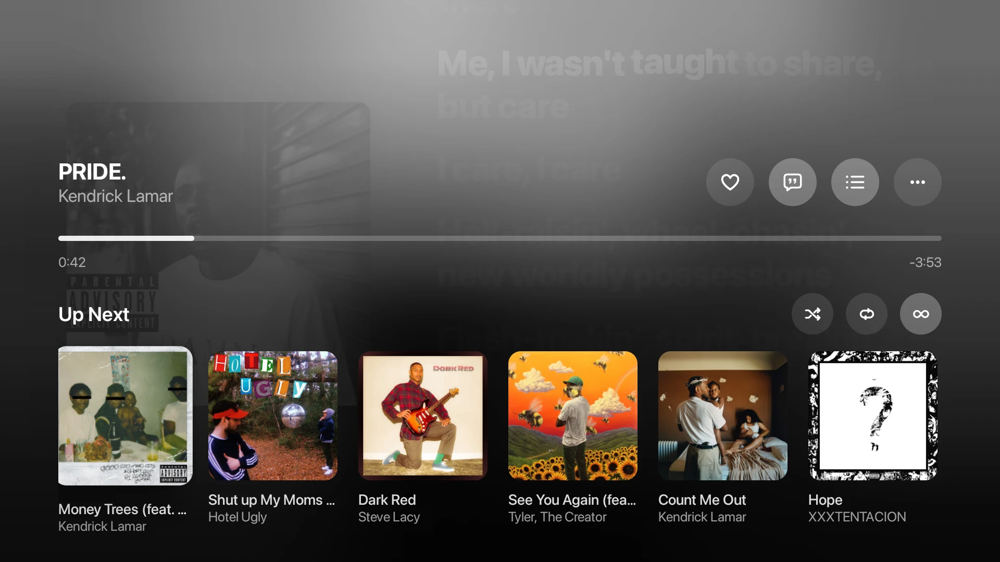

Plays nicely with everything you already use.
Scrobbling, Discord presence, Spotify Canvas, word-synced lyrics and translation, all built in.
- YouTube Music
- Spotify
- Discord
- Last.fm
- ListenBrainz
- Musixmatch
- Google Cast
- Android Auto
Your year in music, in your pocket.
Replay counts every minute, song, artist and album you play, and deals it out as cards that are yours to keep and share.
Now on the big screen.
Hush Music for TV puts full-screen artwork, synced lyrics and your queue in the living room, all driven from the remote.

Universal APK for Android TV
Best New Songs

Ya Hit (feat. Drake, Travis Scott & Loe Shimmy)E
Future

take me home (4 christmas)
Olivia Rodrigo

Mr. Do SomethingE
Lil Baby

Benny's VideoE
Gang of Youths

SUIATSU
Stray Kids

Beware The Fever
Clutch

Girl of the moment
Say Now

When The Night
Jake Bugg

Rose
Kings of Leon

Someone to Hold
JENNIE

TOO SOON (feat. Babyface)E
Jack Harlow

Jiggly Bow BowE
GloRilla, Sexyy Red

breaks open
Dove Cameron

The Wheel
The Hunger Games, Lizzy McAlpine

BLOW UP
P1Harmony

hey boyyy
Slayyyter

HONEYMOON (Remix)E
Parisalexa, Craig David

Make It Easy
Cage the Elephant

Thinkin AboutE
Chuckyy

Cool for Me
NCT DREAM
New This Week

FRESHE
Lil Baby

O My Beloved
Kings of Leon

Sweet Action IIE
Jack Harlow

BLOW UP
P1Harmony

Made You Look
Hudson Westbrook

3two (EP) - SingleE
Ella Mai

DREAM AFTER DREAM
NCT DREAM

SessionsE
Wyatt Flores

Get To It (Apple Music Sessions)E
Quicksand

FINAL GIRLE
Dove Cameron

Dying In This House
Mack Geiger

Good Weather For Immaculate Conception
Alanis Morissette

The Fork and KnifeE
Skepta

Dead CompanyE
Royal Blood

SWALLOW!E
Shygirl

Worst Christmas Ever!
Sufjan Stevens

Fatal ParadoxE
Hatebreed

SMILE! :D plus+E
Porter Robinson

A Very Vicious Christmas
ICE NINE KILLS

HBM Presents: Sleigh The Holidays, Vol. 3
Head Bitch Music
Recent Releases

BETTER OVER TIMEE
BigXthaPlug

HOW TO QUIT SMOKINGE
Dominic Fike

Sessions
Zara Larsson

PerfecthE
Queens of the Stone Age

Sides - EPE
HARDY

The Night Champion (Deluxe)E
Koe Wetzel

Helluva Boss: Season Three, Part 1 (Original Soundtrack)
Helluva Boss

Looks Can Kill - EP
IVE

Everything Under The SunE
Nickelback

HARDCORE HEALING - EPE
horsegiirL

Head Trip (DJ Mix)E
FISHER, Chris Lake

Head Trip (DJ Mix)E
Ben Sterling, Seth Troxler

ON THA RUNE
Baby Osamaa

Head Trip (DJ Mix)
Peggy Gou, Four Tet

Head Trip (DJ Mix)
DJ Harvey

Head Trip (DJ Mix)E
Swedish House Mafia

petal - EPE
Ariana Grande

i=!
XLOV

Hello, Honky TonkE
Kaitlin Butts

Apple Music LiveE
Skye Newman